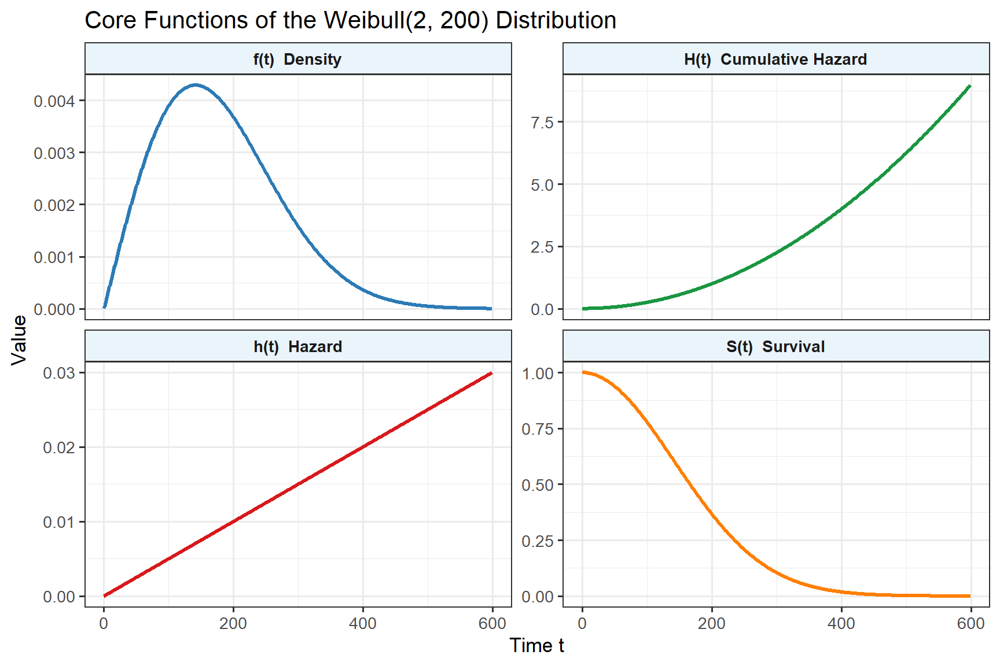
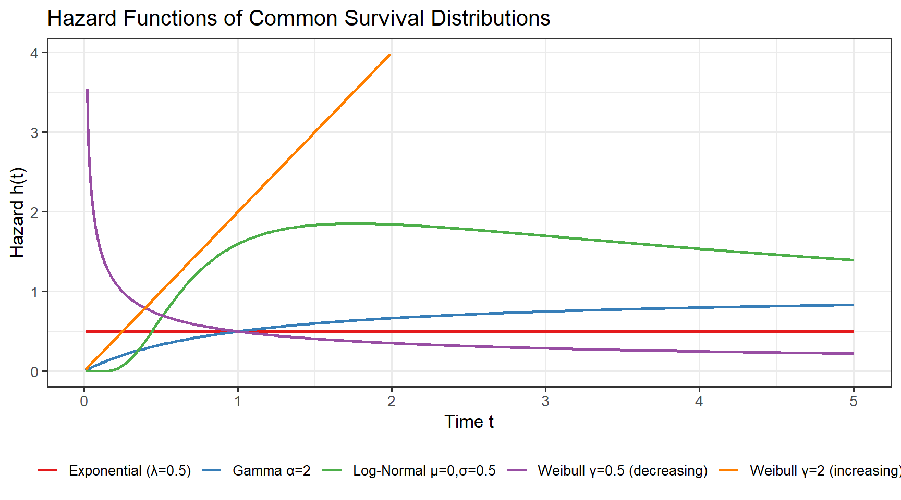

systemfonts and textshaping have been compiled with different versions of Freetype. Because of this, textshaping will not use the font cache provided by systemfonts2 Survival Distributions
A survival distribution is a probability model for the time \(T\) until an event of interest. This chapter develops the mathematical vocabulary — survival function, hazard function, cumulative hazard — that underpins every method in this book. We then survey the standard parametric families used in agricultural and biological applications.
2.1 The Survival Function
Let \(T \geq 0\) be a continuous random variable representing the time to the event. The survival function is:
\[S(t) = P(T > t) = 1 - F(t), \quad t \geq 0\]
Properties:
- \(S(0) = 1\) — all subjects are event-free at the start
- \(S(t)\) is non-increasing: \(S(t_1) \geq S(t_2)\) for \(t_1 < t_2\)
- \(\lim_{t \to \infty} S(t) = 0\) (in most models)
2.2 The Hazard Function
The hazard function \(h(t)\) represents the instantaneous rate of failure at time \(t\), conditional on survival to \(t\):
\[h(t) = \lim_{\Delta t \to 0} \frac{P(t \leq T < t + \Delta t \mid T \geq t)}{\Delta t} = \frac{f(t)}{S(t)}\]
where \(f(t) = -S'(t)\) is the probability density function. Intuition: \(h(t)\,\Delta t \approx P(\text{fail in } [t, t+\Delta t) \mid \text{alive at } t)\).
The hazard can take any non-negative value — it is not a probability.
2.3 The Cumulative Hazard Function
\[H(t) = \int_0^t h(u)\,du = -\log S(t)\]
Therefore: \(\quad S(t) = e^{-H(t)}\)
This relationship is fundamental: once we have \(H(t)\) we have everything.
2.4 Key Relationships
\[f(t) = h(t) \cdot S(t) = h(t)\, e^{-H(t)}\]
The four functions \(f(t)\), \(F(t)\), \(S(t)\), \(h(t)\) each determine all the others:
t <- seq(0.1, 600, by = 1)
shape <- 2; scale <- 200
df <- data.frame(
t = rep(t, 4),
val = c(dweibull(t, shape, scale),
pweibull(t, shape, scale, lower.tail = FALSE),
dweibull(t,shape,scale)/pweibull(t,shape,scale,lower.tail=FALSE),
-log(pweibull(t, shape, scale, lower.tail = FALSE))),
func = rep(c("f(t) Density","S(t) Survival",
"h(t) Hazard","H(t) Cumulative Hazard"),
each = length(t))
)
ggplot(df, aes(x = t, y = val, colour = func)) +
geom_line(linewidth = 1.1) +
facet_wrap(~func, scales = "free_y", ncol = 2) +
scale_colour_manual(values = c("#2C7BB6","#1A9641","#D7191C","#FF7F00")) +
labs(x = "Time t", y = "Value",
title = "Core Functions of the Weibull(2, 200) Distribution") +
theme(legend.position = "none",
strip.background = element_rect(fill = "#EAF4FB"),
strip.text = element_text(face = "bold"))
2.5 Standard Parametric Families
2.5.1 Exponential Distribution
The simplest model: constant hazard \(h(t) = \lambda\).
\[f(t) = \lambda e^{-\lambda t}, \quad S(t) = e^{-\lambda t}, \quad H(t) = \lambda t\]
Mean = \(1/\lambda\), Variance = \(1/\lambda^2\).
The exponential possesses the memoryless property: \(P(T > s + t \mid T > s) = P(T > t)\). This means a survivor at age \(s\) has exactly the same future failure distribution as a new subject. This is biologically implausible for ageing organisms but reasonable for certain mechanical failures or rare random events (sudden crop disease outbreaks, lightning strikes).
2.5.2 Weibull Distribution
Generalises the exponential with a shape parameter \(\gamma > 0\):
\[f(t) = \frac{\gamma}{\lambda}\left(\frac{t}{\lambda}\right)^{\gamma-1} \exp\!\left\{-\!\left(\frac{t}{\lambda}\right)^\gamma\right\}, \quad h(t) = \frac{\gamma}{\lambda}\left(\frac{t}{\lambda}\right)^{\gamma-1}\]
| \(\gamma\) | Hazard shape | Biological interpretation |
|---|---|---|
| \(\gamma < 1\) | Decreasing | Early failures dominate; survival improves after initial period |
| \(\gamma = 1\) | Constant | Exponential; random, age-independent failures |
| \(\gamma > 1\) | Increasing | Ageing; wear-out failures; classic mortality pattern |
2.5.3 Gamma Distribution
\[f(t) = \frac{\lambda^\alpha}{\Gamma(\alpha)} t^{\alpha-1} e^{-\lambda t}, \quad \alpha > 0,\; \lambda > 0\]
The hazard is non-monotone for \(\alpha \neq 1\), converging to \(\lambda\) as \(t \to \infty\). Reduces to Exponential when \(\alpha = 1\).
2.5.4 Log-Normal Distribution
\[\log T \sim N(\mu, \sigma^2)\]
The hazard first increases then decreases — typical in some infectious disease processes where early mortality is high, survivors become robust, but eventually succumb.
2.5.5 Gompertz Distribution
Widely used in actuarial science and animal demography:
\[h(t) = \alpha e^{\beta t}, \qquad S(t) = \exp\!\left\{-\frac{\alpha}{\beta}(e^{\beta t} - 1)\right\}\]
Hazard increases exponentially with time — a good model for senescent mortality in humans and animals. The parameter \(\alpha > 0\) is the baseline hazard; \(\beta > 0\) controls the rate of ageing.
2.5.6 Pareto Distribution
\[h(t) = \frac{\alpha}{t + \theta}, \qquad S(t) = \left(\frac{\theta}{t + \theta}\right)^\alpha\]
Decreasing hazard — appropriate when initial risk is high and survivors become progressively more robust (e.g., seedling establishment).
2.5.7 Rayleigh Distribution
Special case of Weibull with \(\gamma = 2\):
\[h(t) = \frac{t}{\sigma^2}, \qquad S(t) = \exp\!\left(-\frac{t^2}{2\sigma^2}\right)\]
Linearly increasing hazard; used in reliability engineering.
t <- seq(0.01, 5, by = 0.01)
hz_df <- data.frame(
t = rep(t, 5),
h = c(
rep(0.5, length(t)),
dweibull(t, shape = 2, scale = 1) /
pweibull(t, shape = 2, scale = 1, lower.tail = FALSE),
dweibull(t, shape = 0.5, scale = 1) /
pweibull(t, shape = 0.5, scale = 1, lower.tail = FALSE),
dgamma(t, shape = 2, rate = 1) /
pgamma(t, shape = 2, rate = 1, lower.tail = FALSE),
dlnorm(t, meanlog = 0, sdlog = 0.5) /
plnorm(t, meanlog = 0, sdlog = 0.5, lower.tail = FALSE)
),
Distribution = rep(
c(
"Exponential (λ=0.5)",
"Weibull γ=2 (increasing)",
"Weibull γ=0.5 (decreasing)",
"Gamma α=2",
"Log-Normal μ=0,σ=0.5"
),
each = length(t)
)
)
ggplot(hz_df |> filter(h < 4), aes(x = t, y = h, colour = Distribution)) +
geom_line(linewidth = 1) +
scale_colour_brewer(palette = "Set1") +
labs(title = "Hazard Functions of Common Survival Distributions",
x = "Time t", y = "Hazard h(t)", colour = NULL) +
theme(legend.position = "bottom",
legend.text = element_text(size = 10))
2.6 Expectation and Variance of Future Lifetime
For a random variable \(T\) with survival function \(S(t)\):
\[E[T] = \int_0^\infty S(t)\, dt\]
\[\text{Var}(T) = 2\int_0^\infty t\, S(t)\, dt - \left[E(T)\right]^2\]
dist_tbl <- data.frame(
Distribution = c("Exponential","Weibull","Gamma","Log-Normal","Gompertz"),
Mean = c("$1/\\lambda$",
"$\\lambda\\,\\Gamma(1+1/\\gamma)$",
"$\\alpha/\\lambda$",
"$e^{\\mu + \\sigma^2/2}$",
"—"),
Variance = c("$1/\\lambda^2$",
"$\\lambda^2[\\Gamma(1+2/\\gamma)-\\Gamma^2(1+1/\\gamma)]$",
"$\\alpha/\\lambda^2$",
"$(e^{\\sigma^2}-1)e^{2\\mu+\\sigma^2}$",
"—"),
Hazard_Shape = c("Constant","Monotone","Non-monotone","Unimodal","Increasing exp.")
)
kbl(dist_tbl, escape = FALSE,
col.names = c("Distribution","Mean","Variance","Hazard shape"),
align = "clll") |>
kable_styling(bootstrap_options = c("striped","hover","condensed"),
full_width = FALSE, position = "center")| Distribution | Mean | Variance | Hazard shape |
|---|---|---|---|
| Exponential | $1/\lambda$ | $1/\lambda^2$ | Constant |
| Weibull | $\lambda\,\Gamma(1+1/\gamma)$ | $\lambda^2[\Gamma(1+2/\gamma)-\Gamma^2(1+1/\gamma)]$ | Monotone |
| Gamma | $\alpha/\lambda$ | $\alpha/\lambda^2$ | Non-monotone |
| Log-Normal | $e^{\mu + \sigma^2/2}$ | $(e^{\sigma^2}-1)e^{2\mu+\sigma^2}$ | Unimodal |
| Gompertz | — | — | Increasing exp. |
Historical Insights
Benjamin Gompertz (1779–1865) was an English self-taught mathematician and actuary. In 1825 he observed that human mortality rates increase roughly exponentially with age — a pattern so consistent across populations that it became known as the Gompertz Law of Mortality. His original paper, “On the Nature of the Function Expressive of the Law of Human Mortality,” remains one of the most cited works in actuarial science and demography, nearly two centuries after its publication.